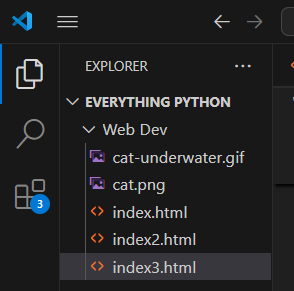

height of the image can be set using height="--" and width="--"
alternative text to the image can be added by using attribute alt="---this is some xyz----"
put all this attributes in < img src ="xyz.png" height="200" width ="200"
alt ="this is the description of the img">
just put the img in anchor tag..
lemme show you below...
just put the src of img tag as a gif file. nothing new right ?
I dont want to copy paste all the images into the VSCODE file explorer right ?
like the screenshot below ---->
using images directly from the file explorer is called using relative path of image...
now what if I want to use images from a specific folder ???

use foldername/image.png in src of the img tag lmao its that easy...